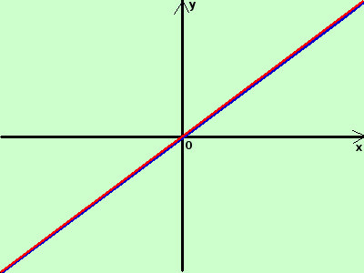

|
sviluppo Data la seguente funzione determinatene, se possibile, la funzione inversa indicandone anche le eventuali restrizioni nel dominio y = x  E' la bisettrice del primo e terzo quadrante E' una funzione che corrisponde alla sua inversa: infatti se cambio x con y ottengo sempre la stessa equazione Importante: tutte le funzioni inverse sono sempre simmetriche rispetto a questa funzione, cioe' il grafico di una funzione inversa si ottiene ribaltando il grafico della funzione di partenza attorno alla bisettrice del primo e terzo quadrante |